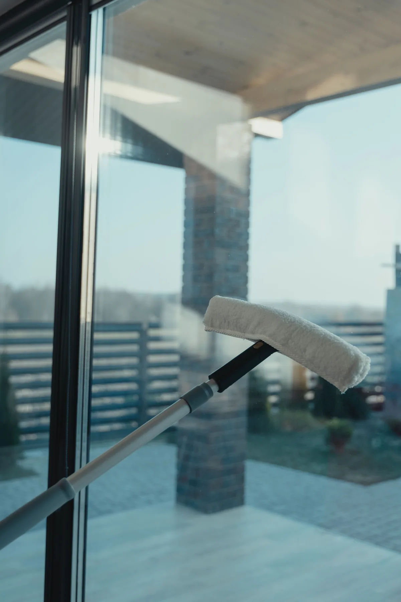

Home / About
Who we are
A locally owned cleaning business in Cedar City, built on good equipment and work you can check yourself.
We take pride in providing exceptional carpet and window cleaning with professional, top of the line equipment. Our advanced system includes a soft water filtration process, ensuring your carpets and windows are cleaned safely without the damage that hard water can cause.
With over a year of dedicated service, we have built our business on hard work, reliability and a customer first mindset.
At Willy's Windows and Carpet, our mission is to create cleaner, healthier and more inviting spaces for our customers through reliable, high quality carpet and window cleaning services. We are dedicated to exceeding expectations with attention to detail, eco friendly practices and a commitment to integrity in every job we do. Our mission
That means showing up when we say we will, quoting a price before we start, and leaving a room you actually want to walk back into.

Hard water leaves deposits behind and can damage what it dries on. Our filtration system takes that out of the equation before the water ever touches your glass or your carpet.
$2 a pane, $50 a room, and a free quote for anything bigger. You will know the number before anyone picks up a hose.
We live and work here in Iron County. If something is not right, you know exactly who to call, and we will come back and fix it.
Free quote, no pressure
Tell us whether it is windows, carpet or both, and we will get back to you with a price.